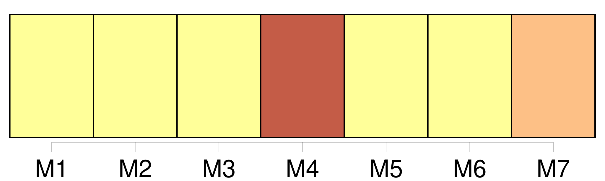
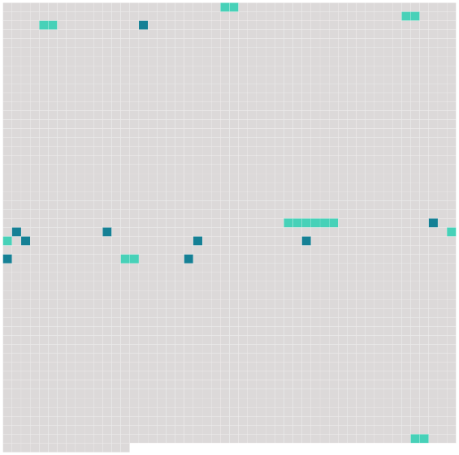

Longueur nb maillons : 17 mentions |
  |
Le poids d'une girafe varie entre 750 et 1 100 kg pour les femelles et peut aller jusqu’ à 2 000 kg pour [les mâles] [3 phrases] Les ossicônes des femelles sont couverts d'une touffe de poils tandis que ceux [des mâles] en sont pratiquement dépourvus après quelques combats. [Les mâles] développent parfois en plus des dépôts de calcium sur [leur] crâne qui finissent par donner l'impression qu'un troisième ossicône est présent. [42 phrases]
[La girafe mâle] [Il] tente de dominer [ses] rivaux en leur coupant le passage et en dressant [sa] tête le plus haut possible. [1 phrases] Dans les combats de girafes, [les mâles] utilisent [leur] tête comme une massue, qui est lourde, cornue et bosselée ( comportement appelé necking ).
[Ses] ossicônes sont massifs et durs comme de l'ivoire et sur [son] front pousse une excroissance osseuse, la corne médiane. [1 phrases]
La tête d'un mâle de 15 ans pèse 10 kg de plus que celle d'un jeune adulte de 7 ans, ce qui lui permet de gagner à tous les coups, mais le perdant est rarement tué et [ils] ne se battent jamais à coups de sabots.
Une fois qu' [un mâle] a conquis une femelle, [ses] amours sont caressantes et paisibles, avec beaucoup de coups de langue. [42 phrases]
L'hypothèse de la sélection sexuelle est aussi avancée, [les mâles] se battant à coup de cou ou au contraire se caressant ( comportement appelé necking ). |
 |
La ressource peut être téléchargée sur la page Ortolang
Si vous avez des questions ou vous voyez des erreurs, merci d'envoyer un mail à silvia.federzoni89@gmail.com
Site développé par S. Federzoni (contact)